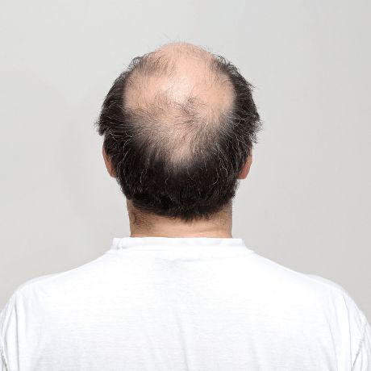

Description: Balding, or hair loss (alopecia), is the partial or complete loss of hair from the scalp or body. It can be temporary or permanent and is often the result of genetics, hormonal changes, medical conditions, or the natural aging process. The most common form is androgenetic alopecia (male or female pattern baldness), which is characterized by a predictable receding hairline or thinning at the crown.
Common Causes: Genetics, hormonal changes, aging, stress, nutritional deficiencies, medical conditions.
Treatment: Minoxidil, finasteride, hair transplant surgery, low-level laser therapy.
When To See A Doctor: If you notice unexpected, patchy, or quick hair loss, you should see a dermatologist or healthcare professional since these patterns frequently point to underlying medical problems rather than normal ageing. Seeking medical attention is especially crucial if hair loss is accompanied by scalp discomfort, severe itching, redness, or obvious scarring, as these symptoms may indicate an inflammatory disease or infection. Additionally, a doctor may assist in determining if the loss is transient or whether a hormonal imbalance is the cause if you have noticeable thinning after starting a new drug, experiencing a serious sickness, or going through a stressful event. Since many therapies for hair restoration are far more successful when initiated at the first indication of thinning, early action is crucial.
Tips: Manage stress, eat a protein-rich diet, avoid tight hairstyles, be gentle when washing hair.